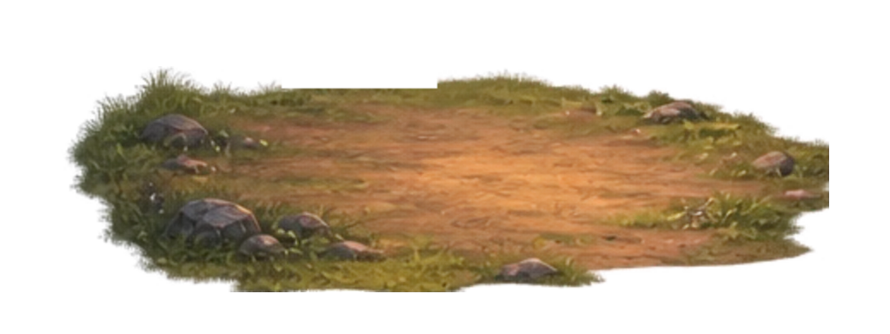
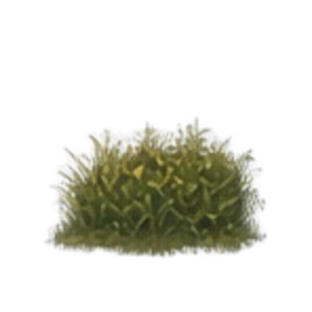
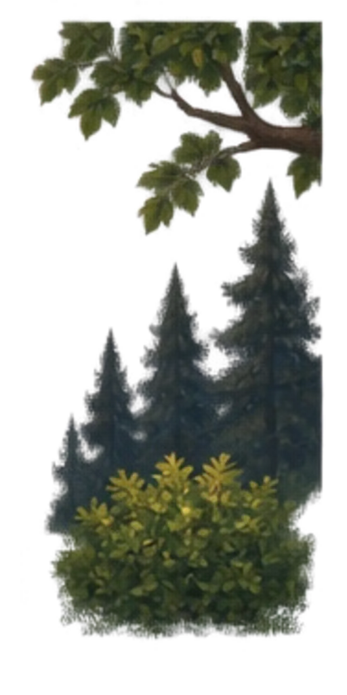

Sniff
川辺の旅人に会いに行く、今日の短い出来事。



静かに川を見ています
旅人
この作品と端末の記録
今日の進行、来訪回数、距離感、出来事のIDだけをこの端末に保存します。会話文や自由入力の本文は保存・送信しません。
川辺の旅人に会いに行く、今日の短い出来事。



今日の進行、来訪回数、距離感、出来事のIDだけをこの端末に保存します。会話文や自由入力の本文は保存・送信しません。